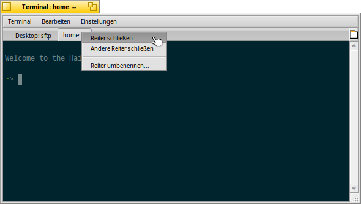
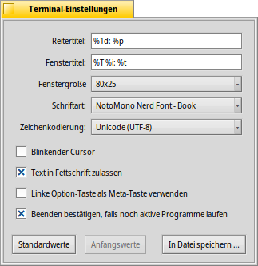
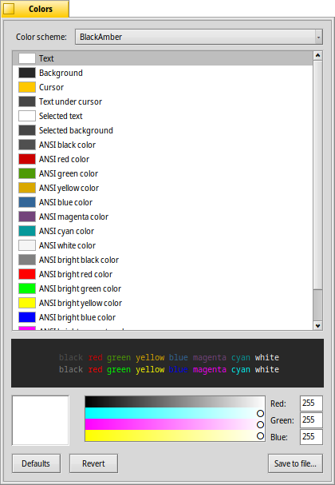

| Index |
|
Fenster und Reiter Einstellungen Farben Tastenkürzel Tipps für das Arbeiten mit dem Terminal Anpassen der Bash |
 Terminal
Terminal
| Deskbar: | ||
| Ort: | /boot/system/apps/Terminal | |
| Einstellungen: | ~/config/settings/Terminal ~/config/settings/profile - ergänzen/ändern von Standardwerten, die in /boot/system/settings/etc/profile definiert sind ~/config/settings/inputrc - ergänzen/ändern von Standardwerten, die in /boot/system/settings/etc/inputrc definiert sind |
Das Terminal ist Haikus Schnittstelle zur Bash, der "Bourne Again Shell".
Einige Anleitungen zum Arbeiten in der Konsole finden sich in Bash und Skripten. Außerdem werden im Kapitel Haikus Konsolenprogramme einige Haiku-spezifischen Befehle vorgestellt. Hier geht es um die Anwendung Terminal an sich.
 Fenster und Reiter
Fenster und Reiter
Es können beliebig viele Terminals geöffnet werden. Entweder jedes in seinem eigenen Fenster - durch einfaches Starten, oder mit ALT N von einem bereits laufenden Terminal aus - oder man benutzt die Reiterfunktion vom Terminal und öffnet einen neuen Reiter mit ALT T.
Ein Doppelklick in den noch freien Teil der Reiterleiste öffnet einen neuen Reiter; ein Doppelklick auf einen Reiter öffnet einen Dialog zum umbenennen seines Titels. Es existieren diverse mit einem %-Zeichen beginnende Variablen, die mittels eines Tooltips erklärt werden wenn der Mauszeiger über dem Textfeld steht.
Als Standard, %1d: %p, zeigt ein Reiter den aktuellen Ordner und per : davon getrennt, den Namen des gerade laufenden Prozesses (oder -- wenn nur die Bash selbst läuft, wahrscheinlich im Leerlauf wartend). Der obige Screenshot zeigt den ersten Reiter mit einer FTP-Sitzung im Desktop Ordner und einen zweiten Reiter im Leerlauf im home Ordner.
Mittels kann der Fenstertitel des Terminals auf ähnliche Weise definiert werden.
Ein Rechtsklick auf einen Reiter öffnet ein Kontextmenü, um oder oder wie durch Doppelklick zu können.
Ein Terminal-Fenster kann wie jedes andere Programmfenster in seiner Größe verändert werden. Es sind auch vorgegebene Einstellungen unter vorhanden. Mittels ALT RETURN kann in den Vollbildmodus (und zurück) geschaltet werden.
Alle Einstellungen, die direkt im Menü geändert werden, , , oder , bleiben durch in der aktuellen Sitzung erhalten. Will man diese Änderungen dauerhaft behalten, muss man sie entweder oder sie im Panel übernehmen.
Einstellungen
öffnet ein Fenster, um die Standardeinstellungen eines Terminals zu konfigurieren.
Die meisten Einstellungen sind selbsterklärend. Nicht so das Einstellen der Schriftgröße - dies erfolgt im Untermenü der ausgewählten .
Lässt man den Mauszeiger über den "Formeln" für Reiter- und Fenstertitel schweben, werden die verschiedenen Variablen durch einen Tooltip erklärt.
Es folgen noch ein paar weitere Einstellungen: Man kann einen haben und .
Man kann die , falls man mit UNIX-Software arbeitet, die Zugriff auf einen erweiterten ASCII-Bereich benötigt, wie beispielsweise GNU Emacs und die GNU Readline Bibliothek.
Wird die Option aktiviert, erscheint eine Warnung, wenn man ein Terminal-Fenster schließen möchte, in dem gerade noch ein Programm ausgeführt wird.
| Hiermit lassen sich unterschiedliche Einstellungen in getrennten Profilen speichern, die bei einem Doppelklick ein entsprechend konfiguriertes Terminal starten. | ||
| Setzt die Einstellungen auf die Werte zurück, die beim Start des Einstellungspanels aktiv waren. | ||
| Setzt alle Einstellungen auf die Standardwerte zurück. |
Farben
öffnet ein Fenster, um die im Terminal verwendeten Farben festzulegen.
Aus dem Menü ganz oben lässt sich ein vordefiniertes wie oder auswählen oder man erstellt ein Schema , indem man die zu ändernde wählt (, , etc.) und den Farbregler darunter benutzt.
Es lassen sich auch die ANSI-Farben anpassen, die ersten acht benannten Farben in der Farbpalette von Terminalanwendungen. Dazu wählt man eine Farbe, beispielsweise "ANSI-Farbe Rot" und ändert sie mit dem Farbregler darunter. Den Effekt sieht man live in Terminal und in der Vorschau unten. Welche Farben wo benutzt werden, ist bei Wikipedia zu lesen.
| Hiermit lassen sich die eingestellten Farben unter einem Namen speichern, der im Menü erscheint, wenn man es im Standardordner ~/config/settings/Terminal/Theme ablegt. | ||
| Bringt die Farben zurück, die beim Start des Farbpanels aktiv waren. | ||
| Setzt alle Einstellungen auf die Standardwerte zurück. |
Tastaturkürzel
Eine Liste mit Tastaturkürzeln ist unter Abkürzungen und Tastenkombinationen aufgelistet.
Ein nettes Feature ist eher eine Tasten-&-Maus-Kombination: Hält man ALT gedrückt, werden Pfade und URLs hervorgehoben, die sich unter dem Mauszeiger befinden. Ein Linksklick öffnet die Datei, Ordner oder Webseite. Ein Rechtsklick zeigt ein Kontextmenü oder an. Angenommen man befindet sich in /MyData/source/haiku/ und hat den Pfad generated/objects/haiku/x86_gcc2/release/apps/stylededit/StyledEdit unter dem Mauszeiger, kopiert letzterer Menüpunkt den kombinierten, absoluten Pfad:
/MyData/source/haiku/generated/objects/haiku/x86_gcc2/release/apps/stylededit/StyledEdit.
Wird ALT SHIFT gehalten, wird ein Pfad nur von seinem Anfang bis zum Mauszeiger hervorgehoben.
Übrigens fügt ein Rechtsklick im Terminalfenster den Inhalt der Zwischenablage ein. In Kombination mit dem Kopieren von Teilen hervorgehobener Pfade, lassen sich so zügig verschachtelte Dateihierachien durchstreifen.
Tipps für das Arbeiten mit dem Terminal
Wird eine Datei aus einem Tracker-Fenster ins Terminal gezogen, so wird der Pfad zu dieser Datei an der aktuellen Cursor-Position eingefügt. Wird sie mittels der rechten Maustaste hineingezogen, gibt es mehrere Möglichkeiten zur Auswahl:
Fügt den Pfad zu dieser Datei ein. Wechselt im Terminal zum Verzeichnis der Datei. Im aktuellen Verzeichnis des Terminals wird eine Verknüpfung zu dieser Datei erstellt. Verschiebt die Datei in das aktuelle Verzeichnis im Terminal. Kopiert die Datei in das aktuelle Verzeichnis im Terminal. Vom Terminal aus kann auch jede Datei mit ihrem bevorzugten Programm gestartet werden. Der Befehl hierfür ist open [Dateiname]. Dies funktioniert auch mit den Repräsentanten für das aktuelle (".") und übergeordnete ("..") Verzeichnis. Um also ein Tracker-Fenster mit dem aktuellen Verzeichnis zu öffnen wäre dies einzugeben:
open .
Produziert ein Befehl viele Ausgaben, scrollt alles ziemlich schnell vorbei. Benutzt man mehrere solcher Befehle hintereinander, wird es schwierig den Anfang der Ausgabe des letzten Befehls zu finden. Mittels oderr ALT L kann man den Scroll-Puffer leeren, befor man einen Befehl ausführt. Schon hat man einen leeren Scroll-Puffer und man kann direkt ganz nach oben springen, um zum Anfang der Ausgabe zu kommen.
Anpassen der Bash
Da die Bash aus der Unix-Welt stammt, gibt es unzählige Möglichkeiten sie anzupassen. Zwei davon sind für den Anwender besonders interessant: profile und inputrc
Werden diese beiden Dateien im /boot/home/config/settings/ Verzeichnis angelegt, erweitern oder ersetzen sie die Standardwerte, die in /boot/system/settings/etc/ festgelegt sind.
profile
Die Datei profile wird jedes Mal geladen, wenn ein neues Terminal gestartet wird. Durch sie werden die verschiedensten Variablen und das Verhalten innerhalb der Bash definiert. Im Internet findet man eine Unmenge an Dokumentation, die alle Möglichkeiten im Detail zeigt.
Der Haiku/BeOS Tipp-Server enthält einige Beispiele und Tipps, unter anderem:
- Customize your Terminal prompt (Den Prompt im Terminal an persönliche Vorlieben anpassen)
- More prompt customizations (Noch mehr Möglichkeiten, den Prompt anzupassen)
- Enhancing bash (Die Bash erweitern)
- Custom keyboard shortcuts (Personalisierte Tastaturkürzel)
Noch mehr Tipps gibt es hier.
inputrc
Die Datei inputrc kümmert sich um die Tastaturzuweisungen. Da Haiku aber bereits mit einer sinnvollen Voreinstellung eingerichtet ist, wird man hier wenig ändern müssen - außer man hat spezielle Bedürfnisse. In diesem Fall sei auf die GNU Readline Bibliothek im Internet verwiesen.